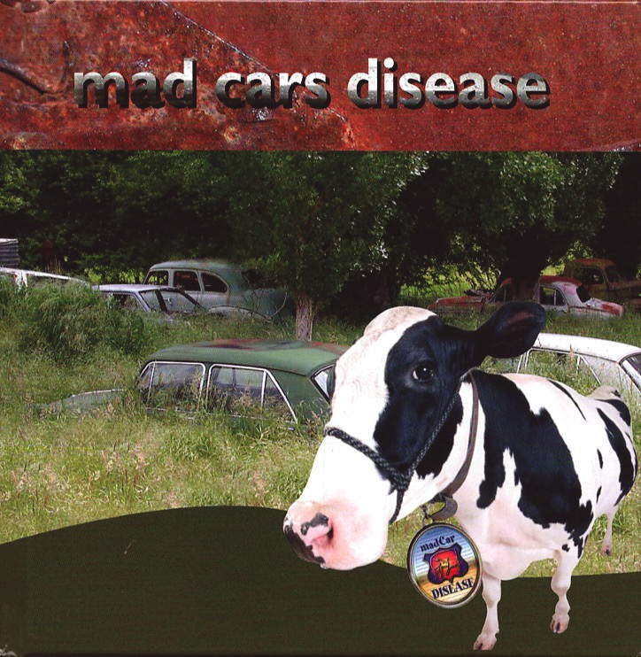

Books
Explore the stories I've brought to life — a collection of novels and narratives that reflect my passion for storytelling, each crafted with heart and imagination.

Round the Bay for a Bob
2017 - MLDesign
The biography of Jean Linehan (nee Starr) is truly inspirational. Born in 1915, she reached the grand old age of 106 before she was ready to say goodbye to this world. Her grandmother survived the wreck of the immigrant ship ‘The Nashwalk’ on South Australia’s rugged coast-line, and Jean proved equally resilient. From her childhood at Glenelg (‘The Bay’) to a teenage life plagued by extreme hardship, this remarkable lady survived two world wars, the Great Depression, and the death of her soulmate, artist Kingsley Linehan.

Diary Z
Omnibus Books 1998, Hatchette Jeunesse
Red Liston loves footy, and fishing from cliffs overlooking the wild ocean. Red tolerates his family, can’t stand Choccy Hebblewhite, and knows that Tara McDonald is his kind of woman. He also suffers from obsessive compulsory diary behaviour. Red doesn’t know it, but he’s heading for trouble. Serious trouble. (different font needed below for this letter, like handwriting)
LETTER FROM Year Nine student to author: Dear Stephanie, Thank you for writing Diary Z. I entered your book because I never liked reading before your book, and my entry won a book voucher. I wanted to say thank you. Brock.

Red
2001 - Supported by The Australia Council and released by Scholastic Australia.
From Red Liston himself: So much mind-smashing stuff has happened to me lately, including barely escaping alive from the body-crushing jaws of a Great White shark. I’m just busting to tell everyone on the planet. I thought of emailing the info, but an email this big would choke up your computer forever. So then I got to thinking – a book can’t be that hard to write can it? Yeah, a book! It’d be a real winner! I’ll blast off with my simple yet profound title, RED, then, fellow Earthlings, we launch into an unknown universe...

Tom Price - From Stonecutter to Premier
2015 - Wakefield Press
How is it possible that an impoverished Welsh stonecutter could rise to the position of the first Labor Premier of South Australia?
Born to an alcoholic father and an illiterate mother, Tom Price would overcome the daunting obstacles of the slums of Liverpool, become an apprentice at the age of nine, discover the value of education and, against the odds, marry the woman he loved. Immigrating to South Australia to seek remedy from stonecutters' lung disease, Tom and his family possessed nothing but a chest of belongings and determination to somehow make the world a happier place for working men and women.
Within three decades Tom as master mason would carve the columns of Parliament House before entering its chambers as a politician, feared by the
conservatives and loved by the people.

Erogeny
2009 - MLDesign
One scorching hot day, trapped in a loveless marriage where her husband John makes her feel useless, dirty and unworthy of love, an outsider comes into Mardi’s life. Adam proves himself the perfect man amongst men. With him she feels treasured, empowered, safe.
But as long as John lives Mardi is not safe. Fearful that he will discover her guilty secret and take his revenge on her and her lover, Mardi finds herself navigating a dangerous path entangled in childhood memories and fantasies. Thirsting for Adam's love, emboldened by his assurance of protection, she takes ever more flagrant risks until she can no longer live the lie.
Mardi has reached breaking point.

Bloody Marvellous
1998 - Bloody Marvellous
In the style of James Herriot, Bloody Marvellous recounts the experiences of Norman Wicks, country GP in three Australian country towns from the 40s to the 60s, and then as ophthalmologist in Adelaide until his death in 1998. Circumstances often forced the doctor far beyond the expectations of his profession into roles of detective, rescuer, vet or specialist. But most of his challenges, whether humourous, bizarre or tragic, proved that reality can be stranger than fiction.

" />Mad Cars Disease
MLDesign
Maurice and Stephanie, the creators of this book, are especially crazy about old cars long ago put out to pasture or abandoned in the bush, those broken and twisted personalities surrendering to rust amongst the blackberries, wildflowers or eucalypts. Some have become the familiar friends of farmstock grazing nearby, or chooks roosting happily within their remains. Others choke with dust and cobwebs as they slowly fade from their former glory in long forgotten sheds. Some unfortunates are more isolated, fusing year after year into the rugged landscape of the Australian Outback.
Each old character has had a life. Each has a story to tell. Most will crumble with their secrets into the earth. A few, however, we have been privileged to uncover.

Mad Cars Disease 2 - More Madness
MLDesign
Dear Mad Car Lovers, Fill up the tank or charge your cars and hit the road – they’re still out there; those rusty and dusty old characters subsiding into various landscapes. Before these ‘treasures’ disappear forever the challenge is on to seek, find, and by capturing each image and environment on camera, offer them immortality.